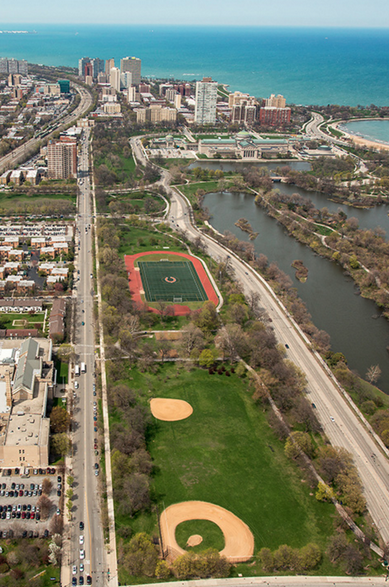
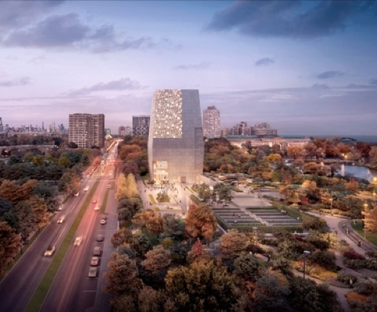
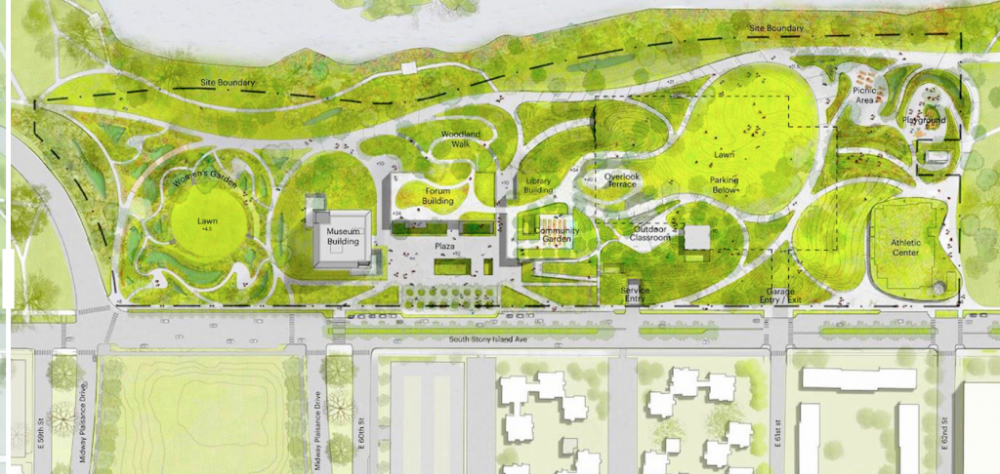
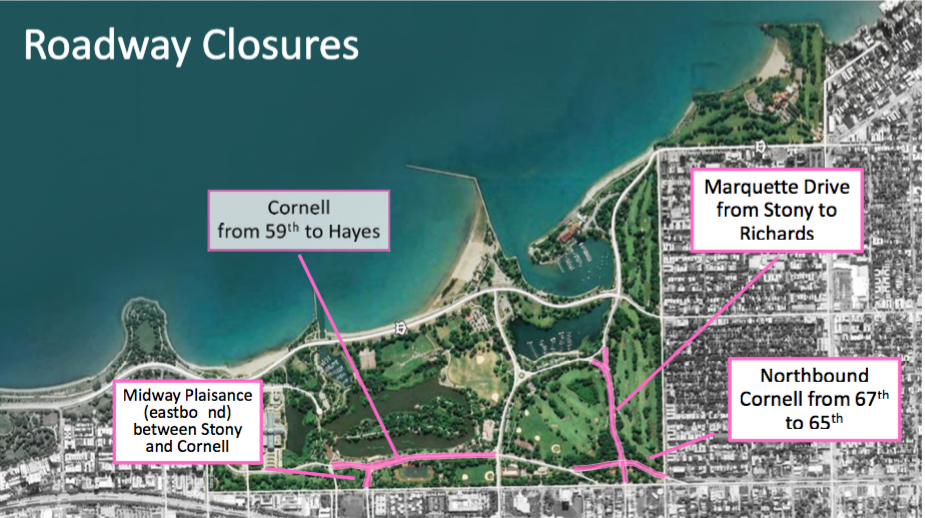

The page is up-to-date as of July 30, 2019.
For more current information, see recent Updates.
Sign up:Sign up to receive Jackson Park Watch Updates to get regular information and ideas for timely action. E-mail jacksonparkwatch@gmail.com with the simple request “sign me up.” To preserve privacy, Updates are sent via bcc.
|
Broad Support plus ControversyWhile there is broad support for having the Obama Presidential Center (OPC) on Chicago’s South Side, the 2015 decision by the City and the Park District to give prime parkland in either Jackson Park or Washington Park to the Obama Foundation was – and continues to be – controversial. When the Obama Foundation chose a 21-acre Jackson Park site in 2016, there was initially widespread acceptance of the location, despite the fact that many had anticipated or preferred the choice of an alternative site in Washington Park that included a smaller portion of actual parkland. However, as the Obama Foundation’s specific plans became known, there was mounting concern about both the immediate and the long-term consequences for Jackson Park and its surrounding neighborhoods. |
From the shifting footprint of the site to its shifting building design to its shifting status from presidential library (operated by the National Archives and Records Administration) to a presidential center (operated by a private organization), the changing definitions of the OPC have raised questions and given observers, local and national, cause for unease.


Aerial photo of site originally designated for Obama Presidential Center.
Concerns about the Landscape Design
As Obama Foundation plans were revealed, it became apparent that, rather than harmonizing with Jackson Park, the plans would make massive changes in many ways. All traces of Olmsted’s Jackson Park – trees, shrubs, grass, distinguishing grade levels – would be obliterated from the OPC site, including over 400 trees, many magnificent mature specimens. While the existing track and field would be relocated to the south end of the site, other community spaces used for athletic, family picnics, and other leisure pastimes would be lost.
Many in the community have voiced fears that the current open, natural character of Jackson Park would be destroyed by the goal of creating a Millennium Park-like ambiance and that local park users would lose out in the contest with tourists. These concerns were exacerbated by the Obama Foundation’s demands to close Cornell Drive along the east side of the site (see “ Concerns about Site-Shifting and Road Changes” below), a change that would allow the crowds visiting the Center to spill directly over into the Park to the edge of the lagoon, disrupting the treasured tranquility of Wooded Island, currently the Paul Douglas Natural Sanctuary.
There are also concerns about the impact on the surrounding neighborhoods and the wider environment, especially in relationship to the proposed 235’ museum tower. These include questions about the impact of the large shadow on sunny days and of the night-time light pollution as well as about the impact on birds, especially since Jackson Park is in a well-known migratory bird flyway.
The Current Obama Presidential Center Design


Redesigned OPC tower as of January 2018.
Beyond the proposed transformation of the site’s basic landscape, the architectural design and programming proposed for the OPC are not in keeping with the calm and natural character of Jackson Park. The Obama Foundation proposed an entertainment area (see image below) modeled on Millennium and Maggie Daley Parks with a mix of slopes, a non-traditional playground, and an open lawn for outdoor concerts and outdoor movies. It includes a large athletic center (40,000 sq. ft.) that could be used for special event rentals and has an unclear, potentially competitive relationship with the existing Jackson Park Fieldhouse and South Side “Y,” both nearby. While some of the proposed facilities were designed with low profiles with green roofs, the main structure of the OPC would be an extremely tall museum tower at the far north end of the site – initially proposed to be 180’ but later revised to be 235’, the equivalent of approximately 23 stories tall, with rental space on top. Such a dominant vertical structure in an historic public park seems out of place to many.


OPC site design as of January 2018.
Concerns about Site-Shifting and Road Changes
Amid controversy, on March 18, 2015, the Chicago City Council adopted Ordinance O2105-192 to approve the offering of spaces in Jackson and Washington Parks for the construction of the Obama Presidential “Library” (now “Center”). That original site in Jackson Park was defined as stretching between Stony Island Avenue and Cornell Drive and between 60th and 63rd Streets.
There was no formal, public mention of the Obama Foundation’s plan for an altered site – or for the building to be a “Center” rather than an actual “Library” – until former President Obama unveiled the OPC design plans on May 3, 2017. The altered site requires the closure of Cornell Drive between 59th and 63rd Streets and the closure of the eastbound segment of the Midway Plaisance between Stony Island Avenue and Cornell Drive. (Note: The physical Obama presidential archives will be located at a site elsewhere operated by the National Archives and Records Administration. The Obama Foundation has paid to have the archives digitized so as to be available online; this arrangement saved the Obama Foundation many millions by freeing it from NARA requirements and oversight).


CDOT proposed road closures and other changes as per plan released June 2017
In June, July and August, 2017, the City and the Park District hosted several public meetings featuring the new OPC plan unveiled in May and presenting as well both a radical new road plan developed by the Chicago Department of Transportation (CDOT) to “accommodate new traffic and parking demands of the OPC” and a plan to merge the Jackson Park and South Shore golf courses, subsequently also directly connected with President Obama. The CDOT road plan, to be implemented at taxpayer expense ($175 million or more), would have a dramatic impact on Jackson Park:
- It would directly connect the new tourist environment of the Obama Presidential Center with the lagoon to the west of Wooded Island, jeopardizing the calm and tranquil nature of the Lagoon and Wooded Island areas.
- It would destroy key elements of the Olmsted design for the Park by eliminating Cornell Drive between 59th St and 63rd St., laid out by Olmsted in 1895 as a 40’ wide carriage pathway. It would also destroy the Olmsted design at the juncture of the Midway Plaisance and the Park by closing eastbound Midway Plaisance between Stony Island Avenue and Cornell Drive.
- It would eliminate the current Perennial Garden at the east end of the Midway Plaisance and replace it with a “Woman’s Garden” whose primary purpose would be storm water management.
- It would convert Hayes Drive, now a moderately busy road with parking along both sides serving users of local playing fields and the 63rd Street beach, into a high-speed, high-capacity roadway. It would ban parking on the street and erect a permanent concrete median, thus establishing Hayes as a formidable barrier between the north and south portions of the Park.
- It would require excising wide strips of existing parkland from the east and west sides of the park for the addition of a southbound lane along Lake Shore Drive between 57th and 63rd streets and the widening of Stony Island Avenue from 59th to 67th streets.
Significant concerns have been raised about the road plan. Near neighbors, those who park in the neighborhood on a daily basis for work, and those who commute through the area have major concerns about traffic delays and safety. Stony Island Avenue hosts three schools and has considerable related vehicular and also pedestrian traffic: CPS’ Bret Harte elementary school at Stony Island and 56th; the UC Lab School campus for kindergarten and early grades at 5800 Stony Island Avenue, and CPS’ Hyde Park Academy High School on Stony Island just north of 63rd. Those who walk in the area for work, school, or daily living are concerned about pedestrian safety. Park lovers and historic preservationists are concerned about the unwarranted destruction of the Olmsted design. To quote the Park District’s 1999-2000 Jackson Park/South Shore Framework plan, “The Olmsted design has served the park well over time and should not be compromised by future plans.”
In fact, the OPC could be constructed in Jackson Park without these massive and expensive taxpayer-funded road changes that destroy the historic design. Jackson Park Watch commissioned an alternative traffic plan that accommodates the construction of the OPC in Jackson Park but keeps Cornell Drive open and has called for a formal review of this and other alternative traffic proposals. Yet, none of the public presentations of the plans for the OPC and related road changes during 2017-18 allowed for consideration of any alternatives.
Community Input and the South Lakefront Framework Plan Process
Also first announced at the June 2017 public meeting noted above was the Chicago Park District’s “South Lakefront Framework Plan” process. Billed as a way to collect community input on updating a Jackson Park/South Shore framework plan dating to 1999-2000, it featured numerous meetings asking community members their views about picnic areas, boardwalks, the location of the local dog park, pickleball courts, bicycle paths and crosswalks, and much more. What it did not ask people about were the plans for the Obama Presidential Center, the CDOT-designed road closures and realignments, or the proposed merged/expanded golf course: those were presented on all of the design boards as givens. Subsequently, the City and Obama Foundation have repeatedly argued disingenuously that it was the South Lakefront Framework Plan that required the construction of the OPC, the execution of the CDOT-designed road changes, and the merger and expansion of the existing golf courses. The SLFP process became in effect a front operation that could be cited as cover for the virtually total absence of legitimate community consultation.
Concession to Community
The Obama Foundation did make one concession to the community when it was forced to shelve plans for an above-ground parking garage on the Midway Plaisance between the Metra tracks and Stony Island Avenue. That, however, is the sole change of any significance that has been made in OPC and related plans since they were first unveiled in detail in June, 2017. In fact, during this interval the design of the museum tower building was increased from 180’ to 235’.
Replacement Parkland Issue Outstanding
Mayoral rhetoric surrounding the 2015 decision to give historic public parkland to the Obama Foundation strongly suggested that the City and Chicago Park District would find new parkland to replace all of the public park acres given to the Obama Foundation. Most recently, however, both the City and Obama Foundation have insisted that only one (1!) acre of replacement parkland is needed, that space directly under the museum tower. Instead, they argue, the low-rise buildings with green roofs, the concrete pedestrian plaza and the Maggie Daley-like slopes and paths all count as public parkland. That is yet another issue to be resolved.
OPC Plans Sailed through Plan Commission and City Council
Notwithstanding the many unaddressed concerns, in an apt illustration of the famed “Chicago Way,” on May 17, 2018, the Chicago Plan Commission unanimously approved the applications for the Obama Presidential Center and the CDOT-proposed road changes. See our Update from May 21, 2018. There was no dissent. There were virtually no questions.
As a follow-up, there were no surprises when a compliant City Council passed the Mayor’s proposed new OPC Ordinance (O2018-7136) on October 31, 2018 without questions or dissent. No attention was paid to significant outstanding problems – costs to taxpayers, displacement of local residents, loss of public parkland, traffic problems likely to result from road closures and realignments. (See our Update from November 1, 2018.)
The actual Ordinance passed by the City Council included a long list of more or less factual assertions (the “whereas”s), along with nine short substantive sections that authorize the City to take the following key steps BUT only after the federal reviews are completed:
- revise the 2015 site footprint to accommodate the different plan that was unveiled by the Obama Foundation on May 3, 2017;
- acquire the land from the Park District;
- approve the closure of streets within the newly reconfigured site (Cornell Drive, the eastbound end of Midway Plaisance);
- grant the “right of use” to the Obama Foundation so the Foundation can construct the OPC – in other words, turn the land over to the Obama Foundation;
- accept ownership from the Foundation of “improvements” to the site once the OPC has been constructed;
- execute, after the federal reviews are completed, a series of agreements with the Obama Foundation that will give it effective control over the site once again. Drafts of these Transaction Documents (Use Agreement, Master Agreement, Environmental Remediation Agreement, UPARR Grant Agreement Amendments, and Mitigation Agreements) were circulated with the text of the Ordinance, but were not part of the actual Ordinance adopted on Halloween;
- appropriate “amounts sufficient to pay the obligation of the City pursuant to the Environmental Agreement,” an open-ended, uncapped commitment.
WHAT COMES NEXT?
- As stated in the 2018 Ordinance, no work on the OPC or the road changes can begin until the required federal reviews are completed. The federal reviews, resuming in late July 2019, are projected to extend through Spring 2020, with many issues remaining to be resolved. Additionally, it is conceivable that, given the procedural irregularities to date, there may be legal challenges to the process that would further delay action.
- The transition to a new mayoral administration presents an opportunity for further review of the agreements that the City must conclude with the Obama Foundation before construction of the OPC can begin. JPW believes that a central focus for such a review should be the costs to taxpayers, in particular, two big-ticket items detailed in those agreements:
- Spending for discretionary road changes. The approximately $175 million in spending for the road changes the Obama Foundation has demanded in Jackson Park is actually unnecessary: Obama Foundation officials told JPW in an April 5, 2018 meeting that the OPC would be built in Jackson Park even if Cornell Drive were not closed. While the City secured a state appropriation for the Jackson Park work, and while this is at least in part federal funding funneled through the state, Chicago taxpayers have contributed to all of this. This funding could be used more productively for much-needed road work elsewhere in the City and state.
- A commitment to funding unspecified environmental remediation work at the OPC site. The 2018 Ordinance included this in Section 6: “….with respect to the Environmental Agreement, the City shall appropriate amounts sufficient to pay the obligations of the City pursuant to the Environmental Agreement, and the City hereby covenants to take timely action as required by law to carry out the appropriation provisions of this sentence.” In making this commitment, the City Council has signed a blank check. The draft Environmental Remediation and Indemnity Agreement [Sections 4 and 8], ready to be finalized after the federal reviews are complete, provides that the City will cover a wide range of “incremental costs” due to the pre-existing environmental condition of OPC site in Jackson Park, known to have a high water table and potentially contaminated soil.
- The appeal filed in July 2019 by Protect Our Parks may provide cause for delay. If POP prevails, the OPC would not be built in Jackson Park, but could be constructed elsewhere on the South Side (or anywhere).
The Central Issue
The proposal for the OPC, given its scale and scope and attendant demands for major road reconfigurations, would effectively “transform” Jackson Park. This dramatic change would be made without any central vision of what the park as a whole could and should be. It would be made without allowing substantive community assessment of the impact of the OPC on the park and the surrounding neighborhoods and without developing a comprehensive plan for the entire park. It would set an unfortunate precedent for the conversion of public parks by fiat rather than by community consensus. This – the future of Jackson Park – is the central issue presented by the Obama Presidential Center.
| “We should use the fate of Jackson Park as an opportunity to rethink the value we place on open space and public parkland held in trust for future generations.”
-Charles Birnbaum, Olmsted expert and President, The Cultural Landscape Foundation |
WHAT YOU CAN DO
JPW urges those concerned about the Obama Presidential Center to communicate those concerns to local officials and media outlets. See the Take Action page for suggestions about who to contact along with their e-mail addresses.